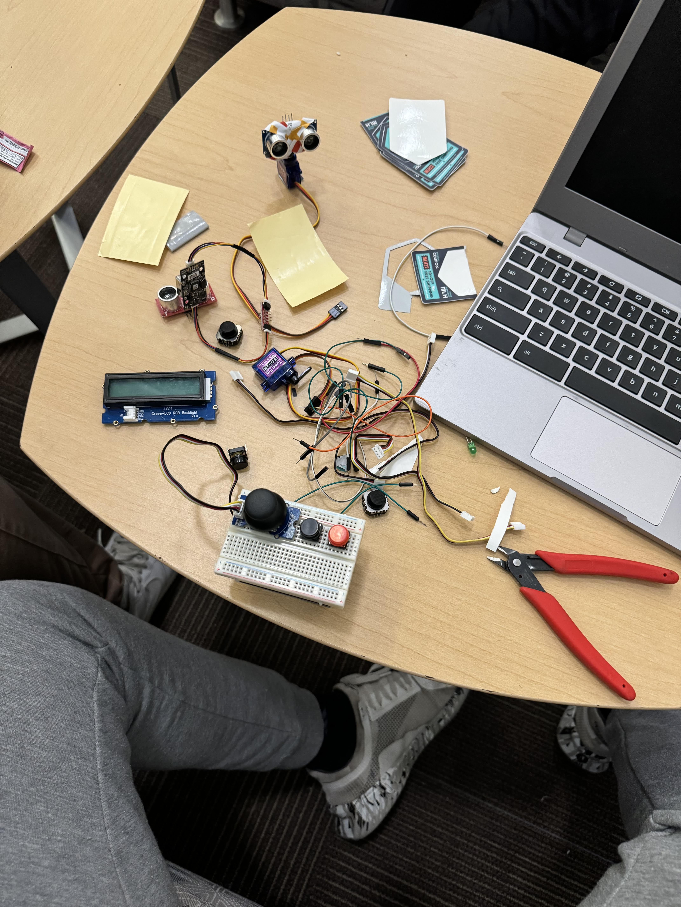
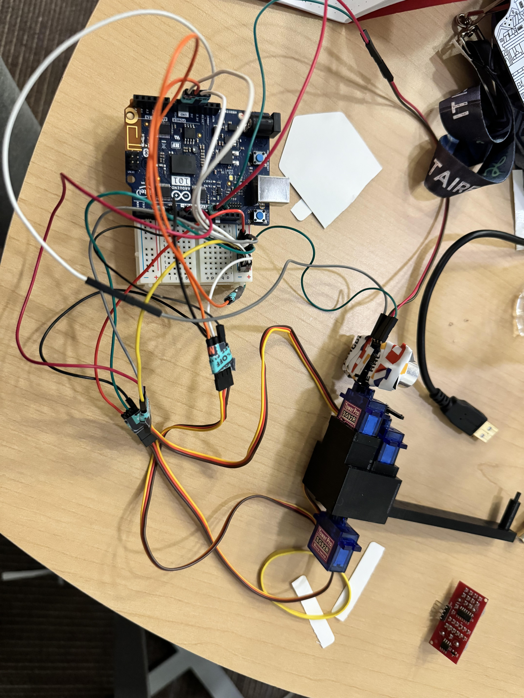
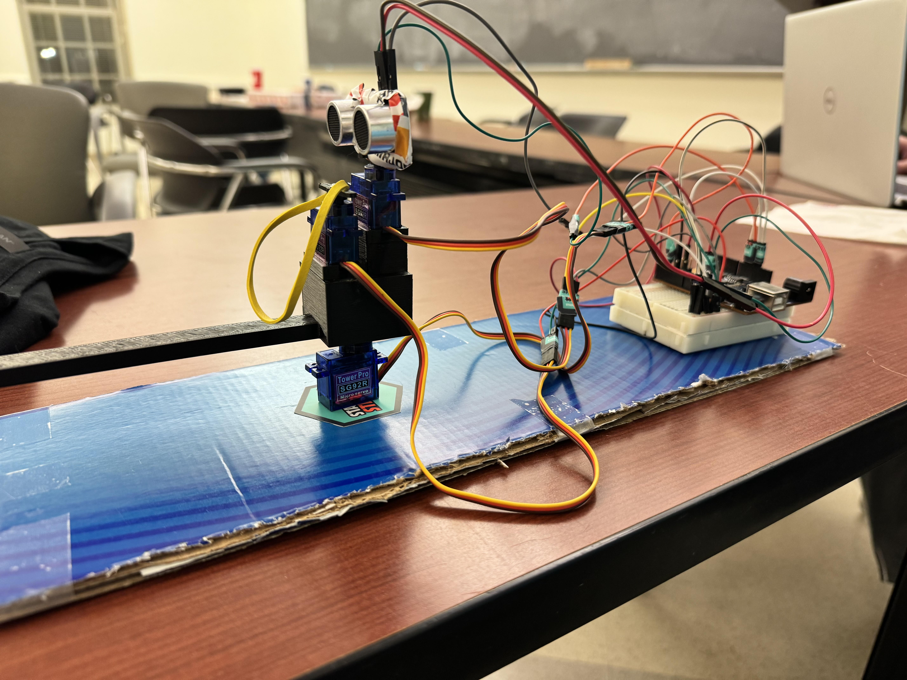

We need wires, sensors, audrino, servos, and a 3d printed servo mount. and bread board. .
We needed the 3 servo motors to move all the parrts. we did not have proper equiment to mount the servo motors so that was an issue. We needed to keep the motors in parellel rather than in series so the voltage remains constant. .
One of our biggets issues was mounting the servo motors as they produce a great amount of torque, unable to stay put by tape. We used the 3d printer of out friends to print a small box, with a arm to hold the rubber band. This allowed a stable mount for 2 servos. one for firing the rubber band, one for turning the radar. On more servo could be mounted underneath to turn the firing arm .
We encountered many issues such as insufficient power supply. This was because the 5v of the usb a couldnt power the 3 motors. An idea from a another group was to connect a secondary power source the a dongle, expanding the power supply to 12v. This allowed us to run 3 motors and a sensor .
